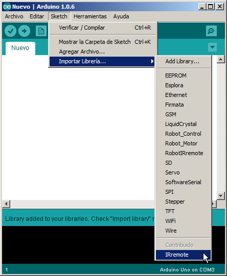
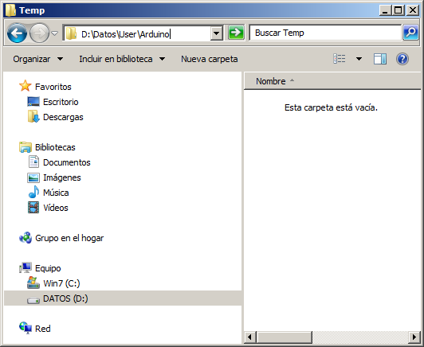
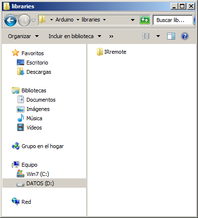

Añadir una librería a Arduino¶
El entorno de Arduino viene por defecto con las librerías más habituales. Pero, en ocasiones, es necesario añadir una nueva librería para que Arduino pueda manejar otros dispositivos tales como paneles TFT o emisores y receptores infrarrojos. En esta página se explica paso a paso cómo añadir una nueva librería o cómo actualizar una librería ya existente en el entorno gráfico de Arduino.
Añadir una nueva librería a Arduino¶
Copiar la librería en formato *.zip a un directorio conocido del disco duro.
Abrir el entorno gráfico de Arduino.
En el menú de Arduino, seleccionar
Programa... Incluir Librería... Añadir Librería .ZIP...
Buscar el directorio del disco duro donde se encuentra la librería
Seleccionar el archivo *.zip con la librería y pulsar [Abrir]

Si la librería se ha importado correctamente aparecerá un mensaje informando de ello. 'Library added to your libraries.'

En el caso de que la librería estuviera ya instalada aparecerá un mensaje de error con color naranja indicando que la librería ya existe. 'A library name _ _ _ already exists'.
Si se quiere actualizar la librería es necesario primero eliminar la librería antigua.

Comprobar que Arduino dispone de la nueva librería en el listado de librerías instaladas.
Programa... Incluir Librería...
Eliminar una librería de Arduino¶
Para actualizar una librería que ya está instalada en el entorno de Arduino, es necesario borrar antes la librería antigua. Estos son los pasos a seguir:
Seleccionar en el menú
Archivo... Preferencias...También se puede pulsar las teclas [Ctrl] + Coma
Copiar la ruta de la 'Ubicación del Sketchbook' pulsando [Ctrl] + c

En el explorador de archivos, pegar la ruta copiada y pulsar enter.
En el explorador, dentro de la ruta del Sketchbook seleccionar la carpeta Arduino... libraries...
En esta ubicación se pueden ver las librerías actualmente instaladas.
Seleccionar la librería que se desee borrar y pulsar la tecla de suprimir o pulsar el botón derecho del ratón y 'Eliminar'
Ver las librerías instaladas en Arduino¶
Para ver qué librerías tiene ya instaladas Arduino es necesario seleccionar en el menú.
Programa... Incluir Librería...